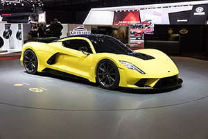
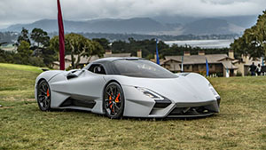
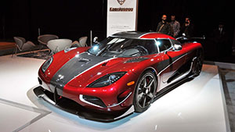
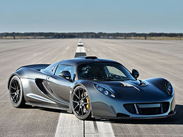
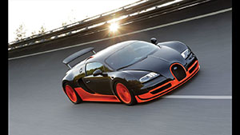
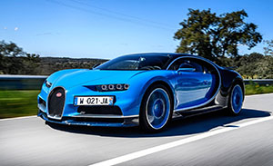

A car is much more than a number, yet non-enthusiasts and enthusiasts alike cannot resist the urge to brag or judge based on specifications. It’s understandable — not everyone has the opportunity to get behind the wheel to evaluate steering feel, braking, and other subjective measures. Numbers are just cleaner.
Common performance benchmarks include price, horsepower, 0 to 60 mph time, cornering G-force, and — weightiest of all — top speed. Whether you will ever have the opportunity to experience a car at its V-Max is unlikely, and yet, inconsequential. Potential is all that matters.
With that in mind, these are the fastest cars in the world according to claimed or proven top speed. As a bonus, we’ve tacked on a couple of cars that would set records if produced. We’ve excluded purely concept or custom vehicle projects to keep things simple.
Some brands seem to have a monopoly on speed, while others have only contributed one hit wonders. However they got here, these automakers did something very right.
HENNESSEY VENOM F5 – 301 MPH

With all of the research and development funds available to a mainstream automaker, one would assume the world’s fastest car would come from a world-recognizable brand. Instead, Hennessey Performance Engineering owns the top spot of this list with its all-new Venom F5. The successor to the record-setting Venom GT, the F5 has a theoretical and claimed top speed of 301 mph, besting the next fastest car by a solid margin.
The Venom F5 utilizes a carbon fiber chassis and is powered by a 7.4-liter twin-turbocharged V8 good for 1,600 horsepower. While Hennessey has yet to legitimize its claims, the F5 will reportedly dash from 0 to 249 mph and back to 0 in less than 30 seconds. That’s about how long it takes a mild sports car just to get from 0 to 100 mph.
SSC TUATARA - 300+ MPH

It’s been seven years since we heard from SSC, when the American specialty vehicle manufacturer announced a successor to its Ultimate Aero hypercar. At the time, SSC claimed the upcoming Tuatara would hit 265 mph, but when the company revealed its production-intent model at this year’s Concours d’Elegance, the figure in question had risen to 300 mph.
Derived from a Nelson Racing Engines’ twin-turbocharged V-8, the Tuatara’s 5.9-liter flat-plane crank engine is capable of 1,750 horsepower when it runs E85 fuel. Power is routed to the rear wheels via a seven-speed automated manual gearbox. This much power combined with the car’s aero-optimized body should get SSC into the history books. The only question remaining is whether Hennessey or Koenigsegg will hit the 300 mph milestone first.
KOENIGSEGG AGERA RS – 278 MPH

If you’re only interested in proven claims, then the world’s fastest cars list officially starts here with the Koenigsegg Agera RS. While Hennessey’s Venom F5 claims it can do over 300 mph, Koenigsegg has actually demonstrated its Agera RS can put down an average top speed of 278 mph. How did the Swedish automaker earn its stripes?
On November 4, 2017, the Nevada Department of Transportation closed an 11-mile stretch of road just outside Las Vegas. Koenigsegg turned up with a customer-owned Agera RS and Koenigsegg factory driver Niklas Lilja put down two high-speed runs (in opposing directions). The average pace (including one run at 285 mph) was recorded by the Guinness Book of World Records.
HENNESSEY VENOM GT - 270 MPH

When Koenigsegg set a new official top speed record, Hennessey forfeited the title. The Hennessey Venom GT came out of nowhere to topple the mighty Bugatti Veyron. In 2014, Hennessey revealed a Lotus-based Frankenstein supercar with a 7.0-liter twin-turbo V8 and 1,244 hp. Until that moment, the Texas-based tuner had merely modified performance cars, but this was the company’s first standalone build.
With approval from the Kennedy Space Center, Hennessey recorded a top speed of 270.4 mph. Though the Guinness Book of World Records approved the run, it has received a fair bit of criticism. For one, most top speed records are taken from an average of two runs in opposite directions (like Koenigsegg did with the Agera RS). Also, the Venom GT is a hand-built, low-production vehicle. Some have questioned whether it deserves to be counted among series production cars.
BUGATTI VEYRON SUPER SPORT – 268 MPH

Before Hennessey and Koenigsegg jumped into the top speed fray, Bugatti dominated the world’s fastest category. Unlike its upstart rivals, Bugatti benefitted from the massive cash reserves of its parent company, Volkswagen. A tremendous investment of time and resources yielded the Bugatti Veyron in 2005. The $1.7-million Veyron utilized a quad-turbocharged, W16 engine to deliver 1,001 hp to all four wheels.
Impressive as it was, the 250-mph Veyron was soon trumped by the 256-mph SSC Ultimate Aero. Bugatti went back to the drawing board and returned with the Veyron Super Sport. An impressive 1,200 hp and a slew of aerodynamic improvements helped the Super Sport to a top speed of 268 mph, clocked at Volkswagen’s Ehra-Lessein test track. Bugatti also developed a convertible version, dubbed the Grand Sport Vitesse, which still holds the record for fastest open-top production car at 254 mph.
BUGATTI CHIRON – 261 MPH

It took Bugatti a decade to develop the Veyron’s successor, during which time the top speed record changed hands a few times. Many anticipated the $2.7-million Bugatti Chiron would immediately reclaim the speed king crown, but things didn’t pan out that way. With 1,500 hp, the Chiron has plenty of firepower, yet its top speed of 261 mph falls short of even the Veyron Super Sport.
Did Bugatti mess up? Not exactly. For one, the Chiron’s 261-mph measure is not drag-limited, but rather electronically limited. If not for aerodynamic, safety, or mechanical limitations, why restrict the Veyron’s successor? Bugatti is reportedly building a special edition Chiron in the vein of the Super Sport. This upcoming model will make an earnest challenge to Hennessey and Koenigsegg for a production top speed record. In other words, we may soon see a Bugatti at the top of this list, so stay tuned!